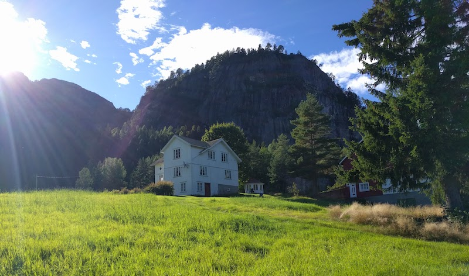

Hello, and welcome to the website of the Wogsland family. This website was started in 1998 by Bradley Wogsland but was later added to by Alora Wogsland. We have a pretty extensive genealogical record of the Wogslands since moving to the USA from Norway. This website is currently run by Wogslands who moved back to Norway, but we try and keep track of all of our family. The names above are links to family websites, and the words are links to different parts of this site.
